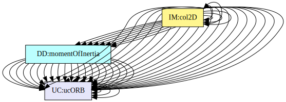

Software Requirements Specification for GamePhysics
Alex Halliwushka, Luthfi Mawarid, and Olu Owojaiye
Table of Contents
An outline of all sections included in this SRS is recorded here for easy reference.
- Table of Contents
- Reference Material
- Introduction
- General System Description
- Specific System Description
- Requirements
- Likely Changes
- Unlikely Changes
- Off-The-Shelf Solutions
- Traceability Matrices and Graphs
- Values of Auxiliary Constants
- References
Reference Material
This section records information for easy reference.
Table of Units
The unit system used throughout is SI (Système International d’Unités). In addition to the basic units, several derived units are also used. For each unit, the Table of Units lists the symbol, a description, and the SI name.
| Symbol | Description | SI Name |
|---|---|---|
| \({\text{J}}\) | energy | joule |
| \({\text{kg}}\) | mass | kilogram |
| \({\text{m}}\) | length | metre |
| \({\text{N}}\) | force | newton |
| \({\text{rad}}\) | angle | radian |
| \({\text{s}}\) | time | second |
Table of Units
Table of Symbols
The symbols used in this document are summarized in the Table of Symbols along with their units. Throughout the document, symbols in bold will represent vectors, and scalars otherwise. The symbols are listed in alphabetical order. For vector quantities, the units shown are for each component of the vector.
| Symbol | Description | Units |
|---|---|---|
| \(a\text{(}t\text{)}\) | Linear acceleration | \(\frac{\text{m}}{\text{s}^{2}}\) |
| \(\boldsymbol{a}\text{(}t\text{)}\) | Acceleration | \(\frac{\text{m}}{\text{s}^{2}}\) |
| \({\boldsymbol{a}\text{(}t\text{)}_{j}}\) | J-Th Body’s Acceleration | \(\frac{\text{m}}{\text{s}^{2}}\) |
| \({C_{\text{R}}}\) | Coefficient of restitution | – |
| \({d_{j}}\) | Distance Between the J-Th Particle and the Axis of Rotation | \({\text{m}}\) |
| \(\boldsymbol{d}\) | Distance between the center of mass of the rigid bodies | \({\text{m}}\) |
| \(\boldsymbol{\hat{d}}\) | Unit vector directed from the center of the large mass to the center of the smaller mass | \({\text{m}}\) |
| \(|\boldsymbol{d}|\) | Euclidean norm of the distance between the center of mass of two bodies | \({\text{m}}\) |
| \({|\boldsymbol{d}|^{2}}\) | Squared distance | \({\text{m}^{2}}\) |
| \(\boldsymbol{F}\) | Force | \({\text{N}}\) |
| \({\boldsymbol{F}_{1}}\) | Force exerted by the first body (on another body) | \({\text{N}}\) |
| \({\boldsymbol{F}_{2}}\) | Force exerted by the second body (on another body) | \({\text{N}}\) |
| \({\boldsymbol{F}_{\boldsymbol{g}}}\) | Force of gravity | \({\text{N}}\) |
| \({\boldsymbol{F}_{j}}\) | Force Applied to the J-Th Body at Time T | \({\text{N}}\) |
| \(G\) | Gravitational constant | \(\frac{\text{m}^{3}}{\text{kg}\text{s}^{2}}\) |
| \(\boldsymbol{g}\) | Gravitational acceleration | \(\frac{\text{m}}{\text{s}^{2}}\) |
| \(h\) | Height | \({\text{m}}\) |
| \(\boldsymbol{I}\) | Moment of inertia | \(\text{kg}\text{m}^{2}\) |
| \({\boldsymbol{I}_{\text{A}}}\) | Moment of Inertia of Rigid Body A | \(\text{kg}\text{m}^{2}\) |
| \({\boldsymbol{I}_{\text{B}}}\) | Moment of Inertia of Rigid Body B | \(\text{kg}\text{m}^{2}\) |
| \(\boldsymbol{J}\) | Impulse (vector) | \(\text{N}\text{s}\) |
| \(j\) | Impulse (scalar) | \(\text{N}\text{s}\) |
| \(KE\) | Kinetic energy | \({\text{J}}\) |
| \(L\) | Length | \({\text{m}}\) |
| \(M\) | Mass of the Larger Rigid Body | \({\text{kg}}\) |
| \(m\) | Mass | \({\text{kg}}\) |
| \({m_{1}}\) | Mass of the first body | \({\text{kg}}\) |
| \({m_{2}}\) | Mass of the second body | \({\text{kg}}\) |
| \({m_{\text{A}}}\) | Mass of Rigid Body A | \({\text{kg}}\) |
| \({m_{\text{B}}}\) | Mass of Rigid Body B | \({\text{kg}}\) |
| \({m_{j}}\) | Mass of the J-Th Particle | \({\text{kg}}\) |
| \({m_{T}}\) | Total Mass of the Rigid Body | \({\text{kg}}\) |
| \(\boldsymbol{n}\) | Collision normal vector | \({\text{m}}\) |
| \(|\boldsymbol{n}|\) | Length of the normal vector | \({\text{m}}\) |
| \(PE\) | Potential energy | \({\text{J}}\) |
| \(\boldsymbol{p}\text{(}t\text{)}\) | Position | \({\text{m}}\) |
| \({\boldsymbol{p}\text{(}t\text{)}_{\text{CM}}}\) | Center of Mass | \({\text{m}}\) |
| \({\boldsymbol{p}\text{(}t\text{)}_{j}}\) | Position Vector of the J-Th Particle | \({\text{m}}\) |
| \(\boldsymbol{r}\) | Position vector | \({\text{m}}\) |
| \(t\) | Time | \({\text{s}}\) |
| \({t_{\text{c}}}\) | Denotes the time at collision | \({\text{s}}\) |
| \(u\text{(}t\text{)}\) | Linear displacement | \({\text{m}}\) |
| \(\boldsymbol{u}\) | Displacement | \({\text{m}}\) |
| \(|{\boldsymbol{u}_{\text{A}\text{P}}}\text{*}\boldsymbol{n}|\) | Length of the Perpendicular Vector to the Contact Displacement Vector of Rigid Body A | \({\text{m}}\) |
| \(|{\boldsymbol{u}_{\text{B}\text{P}}}\text{*}\boldsymbol{n}|\) | Length of the Perpendicular Vector to the Contact Displacement Vector of Rigid Body B | \({\text{m}}\) |
| \({\boldsymbol{u}_{\text{O}\text{B}}}\) | Displacement vector between the origin and point B | \({\text{m}}\) |
| \(v\text{(}t\text{)}\) | Linear velocity | \(\frac{\text{m}}{\text{s}}\) |
| \(\boldsymbol{v}\text{(}t\text{)}\) | Velocity | \(\frac{\text{m}}{\text{s}}\) |
| \(Δ\boldsymbol{v}\) | Change in velocity | \(\frac{\text{m}}{\text{s}}\) |
| \({\boldsymbol{v}\text{(}t\text{)}^{\text{A}\text{P}}}\) | Velocity of the Point of Collision P in Body A | \(\frac{\text{m}}{\text{s}}\) |
| \({\boldsymbol{v}\text{(}t\text{)}^{\text{B}\text{P}}}\) | Velocity of the Point of Collision P in Body B | \(\frac{\text{m}}{\text{s}}\) |
| \({\boldsymbol{v}\text{(}t\text{)}_{1}}\) | Velocity of the First Body | \(\frac{\text{m}}{\text{s}}\) |
| \({\boldsymbol{v}\text{(}t\text{)}_{2}}\) | Velocity of the Second Body | \(\frac{\text{m}}{\text{s}}\) |
| \({\boldsymbol{v}\text{(}t\text{)}_{\text{A}}}\) | Velocity at Point A | \(\frac{\text{m}}{\text{s}}\) |
| \({\boldsymbol{v}\text{(}t\text{)}_{\text{B}}}\) | Velocity at Point B | \(\frac{\text{m}}{\text{s}}\) |
| \({{\boldsymbol{v}\text{(}t\text{)}_{\text{f}}}^{\text{A}\text{B}}}\) | Final Relative Velocity Between Rigid Bodies of A and B | \(\frac{\text{m}}{\text{s}}\) |
| \({{\boldsymbol{v}\text{(}t\text{)}_{\text{i}}}^{\text{A}\text{B}}}\) | Initial Relative Velocity Between Rigid Bodies of A and B | \(\frac{\text{m}}{\text{s}}\) |
| \({\boldsymbol{v}\text{(}t\text{)}_{j}}\) | Velocity of the J-Th Body | \(\frac{\text{m}}{\text{s}}\) |
| \({\boldsymbol{v}\text{(}t\text{)}_{\text{O}}}\) | Velocity at Point Origin | \(\frac{\text{m}}{\text{s}}\) |
| \(α\) | Angular acceleration | \(\frac{\text{rad}}{\text{s}^{2}}\) |
| \({α_{j}}\) | J-Th Body’s Angular Acceleration | \(\frac{\text{rad}}{\text{s}^{2}}\) |
| \(θ\) | Angular displacement | \({\text{rad}}\) |
| \(\boldsymbol{τ}\) | Torque | \(\text{N}\text{m}\) |
| \({\boldsymbol{τ}_{j}}\) | Torque applied to the j-th body | \(\text{N}\text{m}\) |
| \(ω\) | Angular velocity | \(\frac{\text{rad}}{\text{s}}\) |
| \(ϕ\) | Orientation | \({\text{rad}}\) |
Table of Symbols
Abbreviations and Acronyms
| Abbreviation | Full Form |
|---|---|
| 2D | Two-Dimensional |
| 3D | Three-Dimensional |
| A | Assumption |
| CM | Centre of Mass |
| DD | Data Definition |
| GD | General Definition |
| GS | Goal Statement |
| IM | Instance Model |
| LC | Likely Change |
| ODE | Ordinary Differential Equation |
| R | Requirement |
| RefBy | Referenced by |
| Refname | Reference Name |
| SRS | Software Requirements Specification |
| TM | Theoretical Model |
| UC | Unlikely Change |
| Uncert. | Typical Uncertainty |
Abbreviations and Acronyms
Introduction
Due to the rising cost of developing video games, developers are looking for ways to save time and money for their projects. Using an open source physics library that is reliable and free will cut down development costs and lead to better quality products. The document describes the program based on the original, manually created version of GamePhysics.
The following section provides an overview of the Software Requirements Specification (SRS) for GamePhysics. This section explains the purpose of this document, the scope of the requirements, the characteristics of the intended reader, and the organization of the document.
Purpose of Document
The primary purpose of this document is to record the requirements of GamePhysics. Goals, assumptions, theoretical models, definitions, and other model derivation information are specified, allowing the reader to fully understand and verify the purpose and scientific basis of GamePhysics. With the exception of system constraints, this SRS will remain abstract, describing what problem is being solved, but not how to solve it.
This document will be used as a starting point for subsequent development phases, including writing the design specification and the software verification and validation plan. The design document will show how the requirements are to be realized, including decisions on the numerical algorithms and programming environment. The verification and validation plan will show the steps that will be used to increase confidence in the software documentation and the implementation. Although the SRS fits in a series of documents that follow the so-called waterfall model, the actual development process is not constrained in any way. Even when the waterfall model is not followed, as Parnas and Clements point out parnasClements1986, the most logical way to present the documentation is still to “fake” a rational design process.
Scope of Requirements
The scope of the requirements includes the physical simulation of 2D rigid bodies acted on by forces.
Characteristics of Intended Reader
Reviewers of this documentation should have an understanding of rigid body dynamics and high school calculus. The users of GamePhysics can have a lower level of expertise, as explained in Sec:User Characteristics.
Organization of Document
The organization of this document follows the template for an SRS for scientific computing software proposed by koothoor2013, smithLai2005, smithEtAl2007, and smithKoothoor2016. The presentation follows the standard pattern of presenting goals, theories, definitions, and assumptions. For readers that would like a more bottom up approach, they can start reading the instance models and trace back to find any additional information they require.
The goal statements are refined to the theoretical models and the theoretical models to the instance models.
General System Description
This section provides general information about the system. It identifies the interfaces between the system and its environment, describes the user characteristics, and lists the system constraints.
System Context
Fig:sysCtxDiag shows the system context. A circle represents an entity external to the software, the user in this case. A rectangle represents the software system itself (GamePhysics). Arrows are used to show the data flow between the system and its environment.
Figure: System Context
The interaction between the product and the user is through an application programming interface. The responsibilities of the user and the system are as follows:
- User Responsibilities
- Provide initial conditions of the physical state of the simulation, rigid bodies present, and forces applied to them.
- Ensure application programming interface use complies with the user guide.
- Ensure required software assumptions are appropriate for any particular problem the software addresses.
- GamePhysics Responsibilities
- Determine if the inputs and simulation state satisfy the required physical and system constraints.
- Calculate the new state of all rigid bodies within the simulation at each simulation step.
- Provide updated physical state of all rigid bodies at the end of a simulation step.
User Characteristics
The end user of GamePhysics should have an understanding of first year programming concepts and an understanding of high school physics.
System Constraints
There are no system constraints.
Specific System Description
This section first presents the problem description, which gives a high-level view of the problem to be solved. This is followed by the solution characteristics specification, which presents the assumptions, theories, and definitions that are used.
Problem Description
A system is needed to simulate 2D rigid body physics for use in game development in a simple, lightweight, fast, and portable manner, which will allow for the production of higher quality products. Creating a gaming physics library is a difficult task. Games need physics libraries that simulate objects acting under various physical conditions, while simultaneously being fast and efficient enough to work in soft real-time during the game. Developing a physics library from scratch takes a long period of time and is very costly, presenting barriers of entry which make it difficult for game developers to include physics in their products. There are a few free, open source and high quality physics libraries available to be used for consumer products.
Terminology and Definitions
This subsection provides a list of terms that are used in the subsequent sections and their meaning, with the purpose of reducing ambiguity and making it easier to correctly understand the requirements.
- Rigid body: A solid body in which deformation is neglected.
- Elasticity: The ratio of the relative velocities of two colliding objects after and before a collision.
- Centre of mass: The mean location of the distribution of mass of the object.
- Cartesian coordinate system: A coordinate system that specifies each point uniquely in a plane by a set of numerical coordinates, which are the signed distances to the point from two fixed perpendicular oriented lines, measured in the same unit of length (from cartesianWiki).
- Right-handed coordinate system: A coordinate system where the positive z-axis comes out of the screen.
- line: An interval between two points (from lineSource).
- point: An exact location, it has no size, only position (from pointSource).
- damping: An influence within or upon an oscillatory system that has the effect of reducing, restricting or preventing its oscillations (from dampingSource).
Goal Statements
Given the kinematic properties, and forces (including any collision forces) applied on a set of rigid bodies, the goal statements are:
Determine-Linear-Properties: Determine their new positions and velocities over a period of time.
Determine-Angular-Properties: Determine their new orientations and angular velocities over a period of time.
Solution Characteristics Specification
The instance models that govern GamePhysics are presented in the Instance Model Section. The information to understand the meaning of the instance models and their derivation is also presented, so that the instance models can be verified.
Assumptions
This section simplifies the original problem and helps in developing the theoretical models by filling in the missing information for the physical system. The assumptions refine the scope by providing more detail.
objectTy: All objects are rigid bodies. (RefBy: GD:impulse, IM:col2D, IM:rotMot, IM:transMot, DD:chaslesThm, DD:reVeInColl, DD:potEnergy, DD:ctrOfMass, DD:momentOfInertia, DD:linVel, DD:linDisp, DD:linAcc, DD:kEnergy, DD:impulseV, DD:angVel, DD:angDisp, and DD:angAccel.)
objectDimension: All objects are 2D. (RefBy: TM:NewtonSecLawRotMot, GD:impulse, IM:col2D, IM:rotMot, IM:transMot, DD:potEnergy, DD:kEnergy, DD:angVel, DD:angDisp, and DD:angAccel.)
coordinateSystemTy: The library uses a Cartesian coordinate system.
axesDefined: The axes are defined using right-handed coordinate system. (RefBy: GD:impulse, IM:col2D, and IM:rotMot.)
collisionType: All rigid bodies collisions are vertex-to-edge collisions. (RefBy: GD:impulse, IM:col2D, and LC:Expanded-Collisions.)
dampingInvolvement: There is no damping involved throughout the simulation and this implies that there are no friction forces. (RefBy: IM:col2D, IM:transMot, LC:Include-Dampening, DD:potEnergy, and DD:kEnergy.)
constraintsAndJointsInvolvement: There are no constraints and joints involved throughout the simulation. (RefBy: IM:col2D, IM:transMot, and LC:Include-Joints-Constraints.)
Theoretical Models
This section focuses on the general equations and laws that GamePhysics is based on.
| Refname | TM:NewtonSecLawMot |
|---|---|
| Label | Newton’s second law of motion |
| Equation | \[\boldsymbol{F}=m\,\boldsymbol{a}\text{(}t\text{)}\] |
| Description |
|
| Notes |
|
| Source | – |
| RefBy | IM:transMot |
| Refname | TM:NewtonThirdLawMot |
|---|---|
| Label | Newton’s third law of motion |
| Equation | \[{\boldsymbol{F}_{1}}=-{\boldsymbol{F}_{2}}\] |
| Description |
|
| Notes |
|
| Source | – |
| RefBy |
| Refname | TM:UniversalGravLaw |
|---|---|
| Label | Newton’s law of universal gravitation |
| Equation | \[\boldsymbol{F}=G\,\frac{{m_{1}}\,{m_{2}}}{|\boldsymbol{d}|^{2}}\,\boldsymbol{\hat{d}}=G\,\frac{{m_{1}}\,{m_{2}}}{|\boldsymbol{d}|^{2}}\,\frac{\boldsymbol{d}}{|\boldsymbol{d}|}\] |
| Description |
|
| Notes |
|
| Source | – |
| RefBy | GD:accelGravity |
| Refname | TM:NewtonSecLawRotMot |
|---|---|
| Label | Newton’s second law for rotational motion |
| Equation | \[\boldsymbol{τ}=\boldsymbol{I}\,α\] |
| Description |
|
| Notes |
|
| Source | – |
| RefBy | IM:rotMot |
General Definitions
This section collects the laws and equations that will be used to build the instance models.
| Refname | GD:accelGravity |
|---|---|
| Label | Acceleration due to gravity |
| Units | \(\frac{\text{m}}{\text{s}^{2}}\) |
| Equation | \[\boldsymbol{g}=-\frac{G\,M}{|\boldsymbol{d}|^{2}}\,\boldsymbol{\hat{d}}\] |
| Description |
|
| Notes |
|
| Source | Definition of Gravitational Acceleration |
| RefBy | IM:transMot |
Detailed derivation of gravitational acceleration:
From Newton’s law of universal gravitation, we have:
\[\boldsymbol{F}=\frac{G\,{m_{1}}\,{m_{2}}}{{|\boldsymbol{d}|^{2}}}\,\boldsymbol{\hat{d}}\]
The above equation governs the gravitational attraction between two bodies. Suppose that one of the bodies is significantly more massive than the other, so that we concern ourselves with the force the massive body exerts on the lighter body. Further, suppose that the Cartesian coordinate system is chosen such that this force acts on a line which lies along one of the principal axes. Then our unit vector directed from the center of the large mass to the center of the smaller mass \(\boldsymbol{\hat{d}}\) for the x or y axes is:
\[\boldsymbol{\hat{d}}=\frac{\boldsymbol{d}}{|\boldsymbol{d}|}\]
Given the above assumptions, let \(M\) and \(m\) be the mass of the massive and light body respectively. Equating \(\boldsymbol{F}\) above with Newton’s second law for the force experienced by the light body, we get:
\[{\boldsymbol{F}_{\boldsymbol{g}}}=G\,\frac{M\,m}{{|\boldsymbol{d}|^{2}}}\,\boldsymbol{\hat{d}}=m\,\boldsymbol{g}\]
where \(\boldsymbol{g}\) is the gravitational acceleration. Dividing the above equation by \(m\), we have:
\[G\,\frac{M}{{|\boldsymbol{d}|^{2}}}\,\boldsymbol{\hat{d}}=\boldsymbol{g}\]
and thus the negative sign indicates that the force is an attractive force:
\[\boldsymbol{g}=-G\,\frac{M}{{|\boldsymbol{d}|^{2}}}\,\boldsymbol{\hat{d}}\]
| Refname | GD:impulse |
|---|---|
| Label | Impulse for Collision |
| Units | \(\text{N}\text{s}\) |
| Equation | \[j=\frac{-\left(1+{C_{\text{R}}}\right)\,{{\boldsymbol{v}\text{(}t\text{)}_{\text{i}}}^{\text{A}\text{B}}}\cdot{}\boldsymbol{n}}{\left(\frac{1}{{m_{\text{A}}}}+\frac{1}{{m_{\text{B}}}}\right)\,|\boldsymbol{n}|^{2}+\frac{|{\boldsymbol{u}_{\text{A}\text{P}}}\text{*}\boldsymbol{n}|^{2}}{{\boldsymbol{I}_{\text{A}}}}+\frac{|{\boldsymbol{u}_{\text{B}\text{P}}}\text{*}\boldsymbol{n}|^{2}}{{\boldsymbol{I}_{\text{B}}}}}\] |
| Description |
|
| Notes |
|
| Source | Impulse for Collision Ref |
| RefBy | IM:col2D |
Data Definitions
This section collects and defines all the data needed to build the instance models.
| Refname | DD:ctrOfMass |
|---|---|
| Label | Center of Mass |
| Symbol | \({\boldsymbol{p}\text{(}t\text{)}_{\text{CM}}}\) |
| Units | \({\text{m}}\) |
| Equation | \[{\boldsymbol{p}\text{(}t\text{)}_{\text{CM}}}=\frac{\displaystyle\sum{{m_{j}}\,{\boldsymbol{p}\text{(}t\text{)}_{j}}}}{{m_{T}}}\] |
| Description |
|
| Notes |
|
| Source | – |
| RefBy | IM:col2D and IM:transMot |
| Refname | DD:linDisp |
|---|---|
| Label | Linear displacement |
| Symbol | \(u\text{(}t\text{)}\) |
| Units | \({\text{m}}\) |
| Equation | \[u\text{(}t\text{)}=\frac{\,d\boldsymbol{p}\text{(}t\text{)}\left(t\right)}{\,dt}\] |
| Description |
|
| Notes |
|
| Source | – |
| RefBy | IM:transMot |
| Refname | DD:linVel |
|---|---|
| Label | Linear velocity |
| Symbol | \(v\text{(}t\text{)}\) |
| Units | \(\frac{\text{m}}{\text{s}}\) |
| Equation | \[v\text{(}t\text{)}=\frac{\,d\boldsymbol{u}\left(t\right)}{\,dt}\] |
| Description |
|
| Notes |
|
| Source | – |
| RefBy | IM:transMot |
| Refname | DD:linAcc |
|---|---|
| Label | Linear acceleration |
| Symbol | \(a\text{(}t\text{)}\) |
| Units | \(\frac{\text{m}}{\text{s}^{2}}\) |
| Equation | \[a\text{(}t\text{)}=\frac{\,d\boldsymbol{v}\text{(}t\text{)}\left(t\right)}{\,dt}\] |
| Description |
|
| Notes |
|
| Source | – |
| RefBy | IM:transMot |
| Refname | DD:angDisp |
|---|---|
| Label | Angular displacement |
| Symbol | \(θ\) |
| Units | \({\text{rad}}\) |
| Equation | \[θ=\frac{\,dϕ\left(t\right)}{\,dt}\] |
| Description |
|
| Notes |
|
| Source | – |
| RefBy | IM:rotMot |
| Refname | DD:angVel |
|---|---|
| Label | Angular velocity |
| Symbol | \(ω\) |
| Units | \(\frac{\text{rad}}{\text{s}}\) |
| Equation | \[ω=\frac{\,dθ\left(t\right)}{\,dt}\] |
| Description |
|
| Notes |
|
| Source | – |
| RefBy | IM:rotMot |
| Refname | DD:angAccel |
|---|---|
| Label | Angular acceleration |
| Symbol | \(α\) |
| Units | \(\frac{\text{rad}}{\text{s}^{2}}\) |
| Equation | \[α=\frac{\,dω\left(t\right)}{\,dt}\] |
| Description |
|
| Notes |
|
| Source | – |
| RefBy | IM:rotMot |
| Refname | DD:chaslesThm |
|---|---|
| Label | Chasles’ theorem |
| Symbol | \({\boldsymbol{v}\text{(}t\text{)}_{\text{B}}}\) |
| Units | \(\frac{\text{m}}{\text{s}}\) |
| Equation | \[{\boldsymbol{v}\text{(}t\text{)}_{\text{B}}}={\boldsymbol{v}\text{(}t\text{)}_{\text{O}}}+ω\times{\boldsymbol{u}_{\text{O}\text{B}}}\] |
| Description |
|
| Notes |
|
| Source | chaslesWiki |
| RefBy |
| Refname | DD:torque |
|---|---|
| Label | Torque |
| Symbol | \(\boldsymbol{τ}\) |
| Units | \(\text{N}\text{m}\) |
| Equation | \[\boldsymbol{τ}=\boldsymbol{r}\times\boldsymbol{F}\] |
| Description |
|
| Notes |
|
| Source | – |
| RefBy |
| Refname | DD:kEnergy |
|---|---|
| Label | Kinetic energy |
| Symbol | \(KE\) |
| Units | \({\text{J}}\) |
| Equation | \[KE=m\,\frac{|\boldsymbol{v}\text{(}t\text{)}|^{2}}{2}\] |
| Description |
|
| Notes |
|
| Source | – |
| RefBy |
| Refname | DD:coeffRestitution |
|---|---|
| Label | Coefficient of restitution |
| Symbol | \({C_{\text{R}}}\) |
| Units | Unitless |
| Equation | \[{C_{\text{R}}}=-\left(\frac{{{\boldsymbol{v}\text{(}t\text{)}_{\text{f}}}^{\text{A}\text{B}}}\cdot{}\boldsymbol{n}}{{{\boldsymbol{v}\text{(}t\text{)}_{\text{i}}}^{\text{A}\text{B}}}\cdot{}\boldsymbol{n}}\right)\] |
| Description |
|
| Notes |
|
| Source | – |
| RefBy |
| Refname | DD:reVeInColl |
|---|---|
| Label | Initial Relative Velocity Between Rigid Bodies of A and B |
| Symbol | \({{\boldsymbol{v}\text{(}t\text{)}_{\text{i}}}^{\text{A}\text{B}}}\) |
| Units | \(\frac{\text{m}}{\text{s}}\) |
| Equation | \[{{\boldsymbol{v}\text{(}t\text{)}_{\text{i}}}^{\text{A}\text{B}}}={\boldsymbol{v}\text{(}t\text{)}^{\text{A}\text{P}}}-{\boldsymbol{v}\text{(}t\text{)}^{\text{B}\text{P}}}\] |
| Description |
|
| Notes |
|
| Source | – |
| RefBy |
| Refname | DD:impulseV |
|---|---|
| Label | Impulse (vector) |
| Symbol | \(\boldsymbol{J}\) |
| Units | \(\text{N}\text{s}\) |
| Equation | \[\boldsymbol{J}=m\,Δ\boldsymbol{v}\] |
| Description |
|
| Notes |
|
| Source | – |
| RefBy |
Detailed derivation of impulse (vector):
Newton’s second law of motion states:
\[\boldsymbol{F}=m\,\boldsymbol{a}\text{(}t\text{)}=m\,\frac{\,d\boldsymbol{v}\text{(}t\text{)}}{\,dt}\]
Rearranging:
\[\int_{{t_{1}}}^{{t_{2}}}{\boldsymbol{F}}\,dt=m\,\left(\int_{{\boldsymbol{v}\text{(}t\text{)}_{1}}}^{{\boldsymbol{v}\text{(}t\text{)}_{2}}}{1}\,d\boldsymbol{v}\text{(}t\text{)}\right)\]
Integrating the right hand side:
\[\int_{{t_{1}}}^{{t_{2}}}{\boldsymbol{F}}\,dt=m\,{\boldsymbol{v}\text{(}t\text{)}_{2}}-m\,{\boldsymbol{v}\text{(}t\text{)}_{1}}=m\,Δ\boldsymbol{v}\]
| Refname | DD:potEnergy |
|---|---|
| Label | Potential energy |
| Symbol | \(PE\) |
| Units | \({\text{J}}\) |
| Equation | \[PE=m\,\boldsymbol{g}\,h\] |
| Description |
|
| Notes |
|
| Source | – |
| RefBy |
| Refname | DD:momentOfInertia |
|---|---|
| Label | Moment of inertia |
| Symbol | \(\boldsymbol{I}\) |
| Units | \(\text{kg}\text{m}^{2}\) |
| Equation | \[\boldsymbol{I}=\displaystyle\sum{{m_{j}}\,{d_{j}}^{2}}\] |
| Description |
|
| Notes |
|
| Source | – |
| RefBy |
Instance Models
This section transforms the problem defined in the problem description into one which is expressed in mathematical terms. It uses concrete symbols defined in the data definitions to replace the abstract symbols in the models identified in theoretical models and general definitions.
The goal GS:Determine-Linear-Properties is met by IM:transMot and IM:col2D. The goal GS:Determine-Angular-Properties is met by IM:rotMot and IM:col2D.
| Refname | IM:transMot |
|---|---|
| Label | J-Th Body’s Acceleration |
| Input | \({\boldsymbol{v}\text{(}t\text{)}_{j}}\), \(t\), \(\boldsymbol{g}\), \({\boldsymbol{F}_{j}}\), \({m_{j}}\) |
| Output | \({\boldsymbol{a}\text{(}t\text{)}_{j}}\) |
| Input Constraints | \[{\boldsymbol{v}\text{(}t\text{)}_{j}}\gt{}0\]\[t\gt{}0\]\[\boldsymbol{g}\gt{}0\]\[{\boldsymbol{F}_{j}}\gt{}0\]\[{m_{j}}\gt{}0\] |
| Output Constraints | |
| Equation | \[{\boldsymbol{a}\text{(}t\text{)}_{j}}=\boldsymbol{g}+\frac{{\boldsymbol{F}_{j}}\left(t\right)}{{m_{j}}}\] |
| Description |
|
| Notes |
|
| Source | – |
| RefBy |
Detailed derivation of j-th body’s acceleration:
We may calculate the total acceleration of rigid body \(j\) by calculating the derivative of it’s velocity with respect to time (from DD:linAcc).
\[{α_{j}}=\frac{\,d{\boldsymbol{v}\text{(}t\text{)}_{j}}\left(t\right)}{\,dt}\]
Performing the derivative, we obtain:
\[{\boldsymbol{a}\text{(}t\text{)}_{j}}=\boldsymbol{g}+\frac{{\boldsymbol{F}_{j}}\left(t\right)}{{m_{j}}}\]
| Refname | IM:rotMot |
|---|---|
| Label | J-Th Body’s Angular Acceleration |
| Input | \(ω\), \(t\), \({\boldsymbol{τ}_{j}}\), \(\boldsymbol{I}\) |
| Output | \({α_{j}}\) |
| Input Constraints | \[ω\gt{}0\]\[t\gt{}0\]\[{\boldsymbol{τ}_{j}}\gt{}0\]\[\boldsymbol{I}\gt{}0\] |
| Output Constraints | \[{α_{j}}\gt{}0\] |
| Equation | \[{α_{j}}=\frac{{\boldsymbol{τ}_{j}}\left(t\right)}{\boldsymbol{I}}\] |
| Description |
|
| Notes |
|
| Source | – |
| RefBy |
Detailed derivation of j-th body’s angular acceleration:
We may calculate the total angular acceleration of rigid body \(j\) by calculating the derivative of its angular velocity with respect to time (from DD:angAccel).
\[{α_{j}}=\frac{\,dω\left(t\right)}{\,dt}\]
Performing the derivative, we obtain:
\[{α_{j}}=\frac{{\boldsymbol{τ}_{j}}\left(t\right)}{\boldsymbol{I}}\]
| Refname | IM:col2D |
|---|---|
| Label | Collisions on 2D rigid bodies |
| Input | \(t\), \(j\), \({m_{\text{A}}}\), \(\boldsymbol{n}\) |
| Output | \({t_{\text{c}}}\) |
| Input Constraints | \[t\gt{}0\]\[j\gt{}0\]\[{m_{\text{A}}}\gt{}0\]\[\boldsymbol{n}\gt{}0\] |
| Output Constraints | \[{t_{\text{c}}}\gt{}0\] |
| Equation | \[{\boldsymbol{v}\text{(}t\text{)}_{\text{A}}}\left({t_{\text{c}}}\right)={\boldsymbol{v}\text{(}t\text{)}_{\text{A}}}\left(t\right)+\frac{j}{{m_{\text{A}}}}\,\boldsymbol{n}\] |
| Description |
|
| Notes |
|
| Source | – |
| RefBy |
Data Constraints
The Data Constraints Table shows the data constraints on the input variables. The column for physical constraints gives the physical limitations on the range of values that can be taken by the variable. The uncertainty column provides an estimate of the confidence with which the physical quantities can be measured. This information would be part of the input if one were performing an uncertainty quantification exercise. The constraints are conservative to give the user of the model the flexibility to experiment with unusual situations. The column of typical values is intended to provide a feel for a common scenario.
| Var | Physical Constraints | Software Constraints | Typical Value | Uncert. |
|---|---|---|---|---|
| \({C_{\text{R}}}\) | \(0\leq{}{C_{\text{R}}}\leq{}1\) | – | \(0.8\) | 10\(\%\) |
| \(\boldsymbol{F}\) | – | – | \(98.1\) \({\text{N}}\) | 10\(\%\) |
| \(G\) | – | – | \(66.743\cdot{}10^{-12}\) \(\frac{\text{m}^{3}}{\text{kg}\text{s}^{2}}\) | 10\(\%\) |
| \(\boldsymbol{I}\) | \(\boldsymbol{I}\gt{}0\) | – | \(74.5\) \(\text{kg}\text{m}^{2}\) | 10\(\%\) |
| \(L\) | \(L\gt{}0\) | – | \(44.2\) \({\text{m}}\) | 10\(\%\) |
| \(m\) | \(m\gt{}0\) | – | \(56.2\) \({\text{kg}}\) | 10\(\%\) |
| \(\boldsymbol{p}\text{(}t\text{)}\) | – | – | \(0.412\) \({\text{m}}\) | 10\(\%\) |
| \(\boldsymbol{v}\text{(}t\text{)}\) | – | – | \(2.51\) \(\frac{\text{m}}{\text{s}}\) | 10\(\%\) |
| \(\boldsymbol{τ}\) | – | – | \(200\) \(\text{N}\text{m}\) | 10\(\%\) |
| \(ω\) | – | – | \(2.1\) \(\frac{\text{rad}}{\text{s}}\) | 10\(\%\) |
| \(ϕ\) | – | \(0\leq{}ϕ\leq{}2\,π\) | \(\frac{π}{2}\) \({\text{rad}}\) | 10\(\%\) |
Input Data Constraints
Properties of a Correct Solution
The Data Constraints Table shows the data constraints on the output variables. The column for physical constraints gives the physical limitations on the range of values that can be taken by the variable.
| Var |
|---|
| \(\boldsymbol{p}\text{(}t\text{)}\) |
| \(\boldsymbol{v}\text{(}t\text{)}\) |
| \(ϕ\) |
| \(ω\) |
Output Data Constraints
Requirements
This section provides the functional requirements, the tasks and behaviours that the software is expected to complete, and the non-functional requirements, the qualities that the software is expected to exhibit.
Functional Requirements
This section provides the functional requirements, the tasks and behaviours that the software is expected to complete.
Simulation-Space: Create a space for all of the rigid bodies in the physical simulation to interact in.
Input-Initial-Conditions: Input the initial masses, velocities, orientations, angular velocities of, and forces applied on rigid bodies.
Input-Surface-Properties: Input the surface properties of the bodies such as friction or elasticity.
Verify-Physical_Constraints: Verify that the inputs satisfy the required physical constraints from the solution characteristics specification.
Calculate-Translation-Over-Time: Determine the positions and velocities over a period of time of the 2D rigid bodies acted upon by a force.
Calculate-Rotation-Over-Time: Determine the orientations and angular velocities over a period of time of the 2D rigid bodies.
Determine-Collisions: Determine if any of the rigid bodies in the space have collided.
Determine-Collision-Response-Over-Time: Determine the positions and velocities over a period of time of the 2D rigid bodies that have undergone a collision.
Non-Functional Requirements
This section provides the non-functional requirements, the qualities that the software is expected to exhibit.
Performance: The execution time for collision detection and collision resolution shall be comparable to an existing 2D physics library on the market (e.g. Pymunk).
Correctness: The output of simulation results shall be compared to an existing implementation like Pymunk.
Usability: Software shall be easy to learn and use. Usability shall be measured by how long it takes a user to learn how to use the library to create a small program to simulate the movement of 2 bodies over time in space. Creating a program should take no less than 30 to 60 minutes for an intermediate to experienced programmer.
Understandability: Users of Tamias2D shall be able to learn the software with ease. Users shall be able to easily create a small program using the library. Creating a small program to simulate the movement of 2 bodies in space should take no less that 60 minutes.
Maintainability: If a likely change is made to the finished software, it will take at most 10\(\%\) of the original development time, assuming the same development resources are available.
Likely Changes
This section lists the likely changes to be made to the software.
Variable-ODE-Solver: The internal ODE-solving algorithm used by the library may be changed in the future.
Expanded-Collisions: A:collisionType - The library may be expanded to deal with edge-to-edge and vertex-to-vertex collisions.
Include-Dampening: A:dampingInvolvement - The library may be expanded to include motion with damping.
Include-Joints-Constraints: A:constraintsAndJointsInvolvement - The library may be expanded to include joints and constraints.
Unlikely Changes
This section lists the unlikely changes to be made to the software.
Simulate-Rigid-Bodies: The goal of the system is to simulate the interactions of rigid bodies.
External-Input: There will always be a source of input data external to the software.
Cartesian-Coordinate-System: A Cartesian Coordinate system is used.
Objects-Rigid-Bodies: All objects are rigid bodies.
Off-The-Shelf Solutions
As mentioned in the problem description, there already exist free open source game physics libraries. Similar 2D physics libraries are:
Free open source 3D game physics libraries include:
Traceability Matrices and Graphs
The purpose of the traceability matrices is to provide easy references on what has to be additionally modified if a certain component is changed. Every time a component is changed, the items in the column of that component that are marked with an “X” should be modified as well. Tab:TraceMatAvsA shows the dependencies of the assumptions on each other. Tab:TraceMatAvsAll shows the dependencies of the data definitions, theoretical models, general definitions, instance models, requirements, likely changes, and unlikely changes on the assumptions. Tab:TraceMatRefvsRef shows the dependencies of the data definitions, theoretical models, general definitions, and instance models on each other. Tab:TraceMatAllvsR shows the dependencies of the requirements and goal statements on the data definitions, theoretical models, general definitions, and instance models.
Traceability Matrix Showing the Connections Between Assumptions and Other Assumptions
Traceability Matrix Showing the Connections Between Assumptions and Other Items
Traceability Matrix Showing the Connections Between Items and Other Sections
Traceability Matrix Showing the Connections Between Requirements, Goal Statements and Other Items
The purpose of the traceability graphs is also to provide easy references on what has to be additionally modified if a certain component is changed. The arrows in the graphs represent dependencies. The component at the tail of an arrow is depended on by the component at the head of that arrow. Therefore, if a component is changed, the components that it points to should also be changed. Fig:TraceGraphAvsA shows the dependencies of assumptions on each other. Fig:TraceGraphAvsAll shows the dependencies of data definitions, theoretical models, general definitions, instance models, requirements, likely changes, and unlikely changes on the assumptions. Fig:TraceGraphRefvsRef shows the dependencies of data definitions, theoretical models, general definitions, and instance models on each other. Fig:TraceGraphAllvsR shows the dependencies of requirements and goal statements on the data definitions, theoretical models, general definitions, and instance models. Fig:TraceGraphAllvsAll shows the dependencies of dependencies of assumptions, models, definitions, requirements, goals, and changes with each other.

Figure: TraceGraphAvsA

Figure: TraceGraphAvsAll

Figure: TraceGraphRefvsRef
Figure: TraceGraphAllvsR

Figure: TraceGraphAllvsAll
For convenience, the following graphs can be found at the links below:
{kind=link}
{kind=link}
{kind=link}
{kind=link}
{kind=link}
Values of Auxiliary Constants
There are no auxiliary constants.
References
[1]: Bueche, J. Frederick. Introduction to Physics for Scientists, Fourth Edition. Mcgraw-Hill College, 1986.
[2]: Koothoor, Nirmitha. A Document Driven Approach to Certifying Scientific Computing Software. McMaster University, Hamilton, ON, Canada: 2013. Print.
[3]: Parnas, David L. “Designing Software for Ease of Extension and Contraction.” ICSE ’78: Proceedings of the 3rd international conference on Software engineering. 1978. pp. 264–277.
[4]: Parnas, David L. and Clements, P. C. “A rational design process: How and why to fake it.” IEEE Transactions on Software Engineering, vol. 12, no. 2, Washington, USA: February, 1986. pp. 251–257. Print.
[5]: Pierce, Rod. Point. May, 2017. https://www.mathsisfun.com/geometry/point.html.
[6]: Smith, W. Spencer and Koothoor, Nirmitha. “A Document-Driven Method for Certifying Scientific Computing Software for Use in Nuclear Safety Analysis.” Nuclear Engineering and Technology, vol. 48, no. 2, April, 2016. http://www.sciencedirect.com/science/article/pii/S1738573315002582. pp. 404–418.
[7]: Smith, W. Spencer and Lai, Lei. “A new requirements template for scientific computing.” Proceedings of the First International Workshop on Situational Requirements Engineering Processes - Methods, Techniques and Tools to Support Situation-Specific Requirements Engineering Processes, SREP’05. Edited by PJ Agerfalk, N. Kraiem, and J. Ralyte, Paris, France: 2005. pp. 107–121. In conjunction with 13th IEEE International Requirements Engineering Conference,
[8]: Smith, W. Spencer, Lai, Lei, and Khedri, Ridha. “Requirements Analysis for Engineering Computation: A Systematic Approach for Improving Software Reliability.” Reliable Computing, Special Issue on Reliable Engineering Computation, vol. 13, no. 1, February, 2007. https://doi.org/10.1007/s11155-006-9020-7. pp. 83–107.
[9]: The Editors of Encyclopaedia Britannica. Line. June, 2019. https://www.britannica.com/science/line-mathematics.
[10]: Wikipedia Contributors. Chasles’ theorem (kinematics). November, 2018. https://en.wikipedia.org/wiki/Chasles'_theorem_(kinematics).
[11]: Wikipedia Contributors. Cartesian coordinate system. June, 2019. https://en.wikipedia.org/wiki/Cartesian_coordinate_system.
[12]: Wikipedia Contributors. Damping. July, 2019. https://en.wikipedia.org/wiki/Damping_ratio.
[13]: Wilson, Greg, Aruliah, D. A., Titus, C., Chue Hong, Neil P., Davis, Matt, Guy, Richard T., Haddock, Steven H. D., Huff, Kathryn D., Mitchell, Ian M., Plumblet, Mark D., Waugh, Ben, White, Ethan P., and Wilson, Paul. “Best Practices for Scientific Computing, 2013.” PLoS Biol, vol. 12, no. 1, 2013. Print.